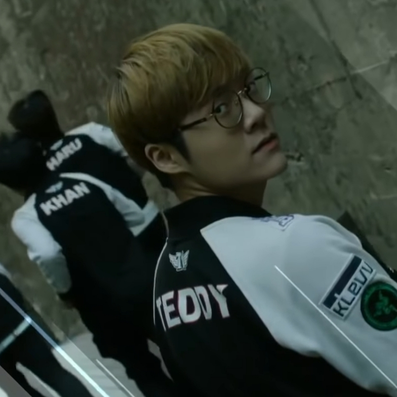

FAVE RAVE
Han Yo Han
Teddy
Collet
테디

SKT T1 Teddy
인간 넥서스 / 테장군
League of Legends 프로게이머 박진성
SKT T1의 원거리 딜러로 닉네임인 '테디'는 집에서 잠에 들 때 곰인형을 껴안고 자던 버릇을 떠올리며 지은 것이라고 한다. 개인 방송에서의 발랄한 입담과 공식 대회에서의 진지한 모습이 대비되어 경기를 지켜보는 재미가 있다.
↑테디의 '애쉬' 플레이 영상